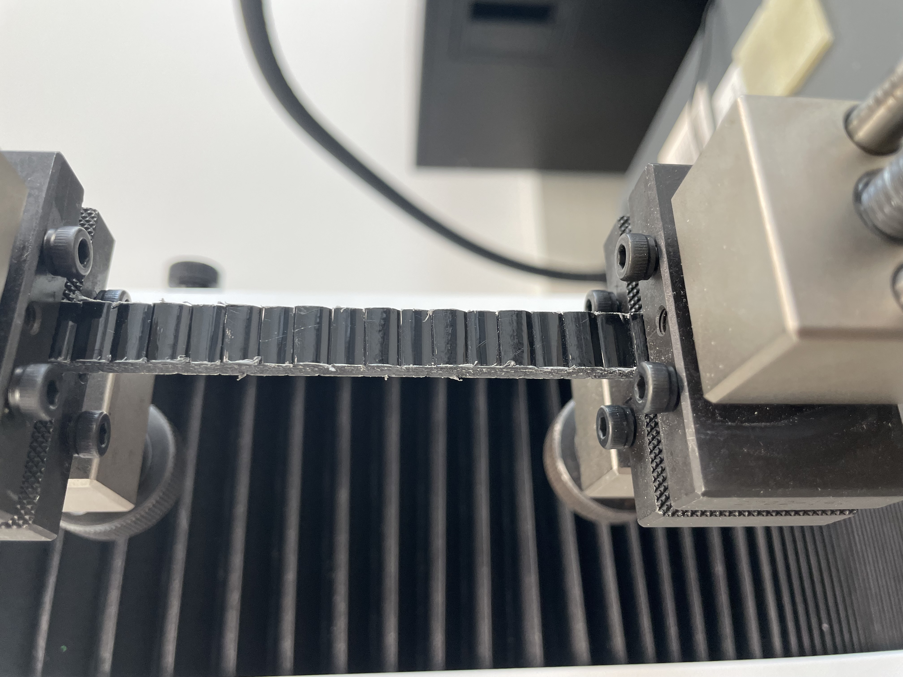

Bahman Nouri
Postdoc, Robotics
Roskilde, Denmark
Technical University of Denmark (DTU)
bahno@dtu.dk
About Me
I am a postdoctoral researcher at the Technical University of Denmark (DTU), where I am focused on developing robotic systems for large-scale additive manufacturing. My background is in mechatronics and robotics, and I have been involved in various projects, including 3D printing with continuous carbon fibers and programming autonomous mobile robots for inspection tasks.

❮
❯